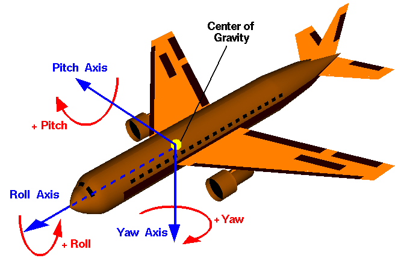

Root-anchored yaw correction for a magnetometer-free motion-capture suit
Danyal Khorami · 10 weeks
The suit produces a good pose
and puts it in the wrong place.
The arms and legs are correct relative to each other.
The whole body faces the wrong direction — and that direction drifts.

An accelerometer measures gravity, which always points downward.
| Observation | What it means |
|---|---|
| Global orientation error is about 3× worse than pose error measured relative to the body's own root | The skeleton is fine. The frame is wrong. |
| Error is near-uniform across every joint, including the root | A whole-body error, not a per-limb one |
| Session-to-session alignment changes sign | An arbitrary starting point, not slow drift |
The pattern is solid. The exact numbers need re-measuring against a proper optical reference — the old comparison suit was itself inertial and shares the same failure.
The one external heading reference in the system is unused as a heading reference.
js/custom_icm.js lines 582, 603–615, 931Tracks how you moved, frame to frame. Fast and local. Error grows the further you travel, because nothing ever re-anchors it.
Also remembers where things are, recognises a place it has already seen, and snaps back onto the old map. That is relocalisation.
ARKit does both. VIO for frame-to-frame motion, plus a persistent sparse map of feature points that it can relocalise against after an interruption. So in practice it is SLAM, even though Apple's own term is visual–inertial odometry.
Why we care: relocalisation is what stops the heading drifting forever — but it also means the pose can jump when it re-finds itself. Both are things the model has to know about.
| How the phone gets it | How good it is | |
|---|---|---|
| Position | Triangulate the tracked feature points across frames to recover the camera's motion, then use the accelerometer for real-world scale — a camera alone cannot tell a small room up close from a big room far away. | Drifts with distance walked. Every metre adds error; only relocalisation pulls it back. |
| Heading | Integrate the gyroscope for speed, and correct it against feature points that have not moved. | Bounded. Re-seeing known geometry re-pins the angle, so error does not accumulate. |
This asymmetry is lucky for us. Rotation is the part VIO does well, and rotation is exactly what we are taking from the phone. We are not asking it for the hard thing.
The phone reports this as a 4×4 transform per frame — position and orientation in its session world — plus a timestamp and a tracking-quality state.
ψphone.Every other heading in the system is a guess that started somewhere arbitrary and has been drifting since. This one is tied to the room.
Zero is wherever the session started — not north. That is fine: we need a reference that holds still, not one that points anywhere in particular.
So the phone must tell us when it is struggling — that is why tracking state has to be on the wire, and why the model predicts its own confidence.
ψphone.ψsuit.C₀ = ψphone − ψsuitC₀ to all 15 sensors, as a rotation about the vertical axis.Why one number fixes fifteen sensors: at the T-pose every sensor was calibrated against the same suit frame. They therefore share the same wrong starting heading — so one rotation removes the part of the error they have in common.
Rotating about the vertical axis only means roll and pitch — which gravity already got right — are provably untouched.
The phone's data as it arrives today is not good enough to fuse. Five fixes, all in weeks 1–4.
| Problem today | Fix |
|---|---|
| No timestamp on the phone message | Send the ARKit frame time; fit a clock map to host time — there are 16 independent clocks |
| No tracking state | Send it, so we know when the phone is struggling and can stop trusting it |
| The camera is not at the hip joint | Measure the lever arm; otherwise position is wrong every time the pelvis turns |
| A coordinate of exactly zero is dropped | Fix the guard — it is a truthiness test on a number |
| The phone can shift on the belt | Rigidly co-mount it with the hip sensor, or model the slip explicitly |
None of this is machine learning. All of it has to be right before any model is trained, or the model gets paid to hide a calibration error.
| Option | Verdict |
|---|---|
| Turn the magnetometer on | No — steel, cables, 15 radios. Confidently wrong heading. |
| A better single-sensor filter | Good hygiene, but cannot invent a heading reference |
| Joint-constraint methods | Real, magnetometer-free — this is the baseline to beat |
| Add a room camera / OptiTrack | Works, but that is infrastructure. Use it as ground truth. |
| Use the phone as a root anchor | PICKED — the hardware is already worn |
| Learn the leftover per-segment error | PICKED — this is the contribution |
The phone can fix one segment.
It cannot fix the other fourteen.
It tells you where the pelvis points.
It tells you nothing about whether the left forearm has drifted relative to it.
That leftover is recoverable only from body structure and motion.
That is the learning problem.
Week 3 is a go/no-go gate. If Stage 1 alone fixes most of it, the honest answer is "this was a missing coordinate transform, not a missing model" — and that is a result worth publishing.
Put the pelvis where the phone says it is, then carry that correction to every segment.
A large public motion-capture archive. We place 15 virtual sensors on the skeleton and simulate what each one would have measured.
Because we generated it, we know the true heading of every segment exactly — which no real recording of this suit can give us.
The corruption is not guessed — the sizes come from instrumentation already measured on the real hardware. Real recordings are kept back for evaluation only, never training.
Because the two things move at completely different speeds.
| Changes how fast | So it must be | |
|---|---|---|
| The pose | 32 times a second | Never delayed. Straight through, no waiting. |
| The heading error | a degree or so per minute | Estimated slowly and held in a filter. |
A heading correction computed from a second ago is stale by about 0.02°. Next to the tens of degrees we are removing, that is nothing. So the slow path can lag and the fast path never has to.
Everything is causal — no part of it waits for a future frame. Stage 1, the phone anchor, is just a coordinate transform, so that half is real-time no matter what.
| Choice | Reason |
|---|---|
| Graph over the skeleton | A forearm's error is constrained by its upper arm and hand — not by the opposite foot. Restricting messages to real joints encodes anatomy and keeps the model small. |
| Causal TCN, not a bidirectional RNN | The system has to work while it is running. A bidirectional model must see the future, which means waiting. Dilated causal convolutions give a long memory with zero lookahead, and run with a ring buffer. |
| A filter, not a direct prediction | The 14 offsets are a slow, low-dimensional state — exactly what a filter is for. Drift is a random walk, which is the filter's process model. Smoothness comes from the physics, not a tuned loss term. |
| Rotation about gravity only | It structurally cannot damage roll and pitch, which gravity already got right. |
| It predicts confidence | Standing still, the answer genuinely is not knowable. Feeding σ to the filter as measurement noise means an unreliable frame simply does not move the estimate — no gating rule to hand-tune. |
| ~150k parameters | It only produces a measurement; the filter does the tracking. Physics, skeleton and the phone anchor are handed to it for free, so a large model would mostly memorise a small real dataset. |
Where we have ground truth, the right answer is known. That is supervised learning. RL would throw that signal away and learn the same thing slower and less stably.
1. Self-supervised adaptation — at deployment there are no labels, but there are free consistency checks: feet shouldn't slide, joints have limits, gait is symmetric. Improve against those.
2. A small trust policy — "how much do I trust the phone right now?" is a genuine sequential decision. Small, and a fair stretch goal.
| Weeks | Work |
|---|---|
| 1–2 | Audit the phone path, freeze conventions, add timestamps and tracking state to the logs |
| 3 | Go / no-go gate — measure the deterministic phone anchor on its own |
| 4–5 | Simulated-sensor data generator, corruption model, evaluation harness |
| 6 | Classical and per-sensor baselines — frozen |
| 7–8 | Train the model; ablations; uncertainty analysis |
| 9 | Real captures against an optical reference |
| 10 | Statistics, failure analysis, write-up |
The risky weeks are first, on purpose. If the phone doesn't send what we need, I want to know in week 1 — not week 7.
Stage 1 might fix most of it
without any machine learning.
That would be a real result, not a failure: it would show the defect was a missing coordinate transform rather than something needing a neural network.
The gate is in week 3 so there is time to pivot — to packet-loss reconstruction or tracking-quality prediction, on the same data.
The project is useful whichever way the hypothesis falls.
To fill in once the images are chosen.
| Slide | Source |
|---|---|
| 4 — roll, pitch and yaw axes | — |
| 7 — phone tracking a room | — |
| Pipeline and model diagrams | My own, since they describe this system. |
Check the licence before using anything: public domain and CC BY are safe with attribution, CC BY-SA additionally requires share-alike, and vendor screenshots are usually not licensed for reuse. A screenshot from our own app avoids the question entirely.
Questions